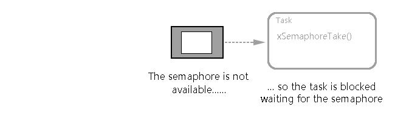

# 采用二值信号量同步
二值信号量可以在某个特殊的中断发生时，让任务解除阻塞，相当于让任务与中断同步。这样就可以让中断事件处理量大的工作在同步任务中完成，中断服务例程 (ISR) 中只是快速处理少部份工作。
如果某个中断处理要求特别紧急，其延迟处理任务的优先级可以设为最高，以保证延迟处理任务随时都抢占系统中的其它任务。
在这种中断同步的情形下，信号量可以看作是一个深度为 1 的队列。这个队列由于最多只能保存一个数据单元，所以其非空则满（所谓 “二值” 即二进制，只有 0 / 1）。延迟处理任务调用 xSemaphoreTake() 时，等效于带阻塞时间地读取队列，如果队列为空的话任务则进入阻塞态。当事件发生后，ISR 简单地通过调用 xSemaphoreGiveFromISR() 放置一个令牌（信号量）到队列中，使得队列成为满状态。这也使得延迟处理任务切出阻塞态，并移除令牌，使得队列再次成为空。
其演示过程：

# API 函数
要想调用以下函数，需要 #include "semphr.h"
| 功能 | API 接口 | 实际执行函数 | 其它 |
|---|---|---|---|
| 二值信号量创建（动态） | vSemaphoreCreateBinary() | 弃用 | |
| 二值信号量创建（动态） | xSemaphoreCreateBinary() | xQueueGenericCreate() | |
| 二值信号量获取 | xSemaphoreTake() | xQueueGenericReceive() | |
| 二值信号量释放 | xSemaphoreGive() | xQueueGenericSend() | |
| 二值信号量获取（用于中断中） | xSemaphoreTakeFromISR() | xQueueReceiveFromISR() | |
| 二值信号量释放（用于中断中） | xSemaphoreGiveFromISR() | xQueueGiveFromISR() | |
| 二值信号量创建（静态） | xSemaphoreCreateBinaryStatic() | xQueueGenericCreateStatic() |
1、vSemaphoreCreateBinary () API 函数（弃用）
void vSemaphoreCreateBinary( xSemaphore ) |
传入参数：
- xSemaphore：创建的二值信号量
需要说明的是 vSemaphoreCreateBinary() 在实现上是一个宏，所以信号量变量应当直接传入，而不是传址。
注意：在新的版本中一般是通过 xSemaphoreCreateBinary(void) 函数返回一个 SemaphoreHandle_t 值，并以此创建一个二值信号量。
2、SemaphoreHandle_t xSemaphoreCreateBinary () API 函数
#define xSemaphoreCreateBinary() xQueueGenericCreate( ( UBaseType_t ) 1, semSEMAPHORE_QUEUE_ITEM_LENGTH, queueQUEUE_TYPE_BINARY_SEMAPHORE ) |
返回参数：
- SemaphoreHandle_t：创建的二值信号量
为什么放弃 vSemaphoreCreateBinary() 函数以及它们之间的区别我们可以看一下它的注释：
/*
This old vSemaphoreCreateBinary() macro is now deprecated in favour of
the xSemaphoreCreateBinary() function. Note that binary semaphores created using
the vSemaphoreCreateBinary() macro are created in a state such
that the first call to 'take' the semaphore would pass,
whereas binary semaphores created using xSemaphoreCreateBinary() are created
in a state such that the the semaphore must first be 'given' before it can be 'taken'.
*/
3、xSemaphoreTake () API 函数
BaseType_t xSemaphoreTake( SemaphoreHandle_t xSemaphore, | |
TickType_t xBlockTime ); |
传入参数：
- xSemaphore：获取得到的信号量。信号量由定义为
xSemaphoreHandle类型的变量引用；信号量在使用前必须先创建。 - xTicksToWait：阻塞超时时间。任务进入阻塞态以等待信号量有效的最长时间。如果
xTicksToWait为0，则xSemaphoreTake()在信号量无效时会立即返回；如果把xTicksToWait设置为portMAX_DELAY，那么阻塞等待将没有超时限制。
返回参数（有两个可能的返回值）：
- pdTRUE：成功获得信号量。
- pdFALSE：未能获得信号量。
4、xSemaphoreGive () API 函数
BaseType_t xSemaphoreGive( SemaphoreHandle_t xSemaphore ); |
传入参数：
- xSemaphore：给出的信号量。信号量由定义为
xSemaphoreHandle类型的变量引用；信号量在使用前必须先创建。
返回参数（有两个可能的返回值）：
- pdTRUE：信号量被释放。
- pdFALSE：信号量已经有效，无法给出。
5、xSemaphoreTakeFromISR () API 函数
BaseType_t xSemaphoreTakeFromISR( SemaphoreHandle_t xSemaphore, | |
BaseType_t *pxHigherPriorityTaskWoken ); |
传入参数：
- xSemaphore：给出的信号量。信号量由定义为
xSemaphoreHandle类型的变量引用；信号量在使用前必须先创建。 - pxHigherPriorityTaskWoken：如果获取该信号量导致一个任务解除阻塞，并且被解除阻塞的任务的优先级高于当前运行的任务，那么
xSemaphoreTakeFromISR()将把*pxHigherPriorityTaskWoken设置为pdTRUE。如果xSemaphoreTakeFromISR()将该值设置为pdTRUE，则应该在退出中断之前请求上下文切换。
返回参数（有两个可能的返回值）：
- pdTRUE：
xSemaphoreTakeFromISR()调用成功。 - pdFALSE：信号量释放失败。
6、xSemaphoreGiveFromISR () API 函数
BaseType_t xSemaphoreGiveFromISR( SemaphoreHandle_t xSemaphore, | |
BaseType_t *pxHigherPriorityTaskWoken ); |
传入参数：
- xSemaphore：给出的信号量。信号量由定义为
xSemaphoreHandle类型的变量引用；信号量在使用前必须先创建。 - pxHigherPriorityTaskWoken：如果调用
xSemaphoreGiveFromISR()使得一个任务解除阻塞，并且这个任务的优先级高于当前任务（也就是被中断的任务），那么xSemaphoreGiveFromISR()会在函数内部将*pxHigherPriorityTaskWoken设为pdTRUE。如果xSemaphoreGiveFromISR()将此值设为pdTRUE，则在中断退出前应当进行一次上下文切换。
返回参数（有两个可能的返回值）：
- pdTRUE：
xSemaphoreGiveFromISR()调用成功。 - errQUEUE_FULL：信号量已经有效，无法给出。
7、xSemaphoreCreateBinaryStatic () API 函数
SemaphoreHandle_t xSemaphoreCreateBinaryStatic( StaticSemaphore_t *pxSemaphoreBuffer ); |
该函数是用于在静态的时候，利用该函数创建一个二值信号量的，具体可以去看他的注释，这里就不说了。
# 演示例程
二值信号量多用于 1v1 这种情况，因为它只有两个值（0 / 1），非空则满，有点类似于在非 RTOS 中定义的标志位；由于可以在任务与中断同步，并且存在超时机制，那本次例程就可以把它应用到串口 DMA 接收中。
/* | |
FreeRTOS V9.0.0 - Copyright (C) 2016 Real Time Engineers Ltd. | |
All rights reserved | |
VISIT http://www.FreeRTOS.org TO ENSURE YOU ARE USING THE LATEST VERSION. | |
This file is part of the FreeRTOS distribution. | |
FreeRTOS is free software; you can redistribute it and/or modify it under | |
the terms of the GNU General Public License (version 2) as published by the | |
Free Software Foundation >>>> AND MODIFIED BY <<<< the FreeRTOS exception. | |
*************************************************************************** | |
>>! NOTE: The modification to the GPL is included to allow you to !<< | |
>>! distribute a combined work that includes FreeRTOS without being !<< | |
>>! obliged to provide the source code for proprietary components !<< | |
>>! outside of the FreeRTOS kernel. !<< | |
*************************************************************************** | |
FreeRTOS is distributed in the hope that it will be useful, but WITHOUT ANY | |
WARRANTY; without even the implied warranty of MERCHANTABILITY or FITNESS | |
FOR A PARTICULAR PURPOSE. Full license text is available on the following | |
link: http://www.freertos.org/a00114.html | |
*************************************************************************** | |
* * | |
* FreeRTOS provides completely free yet professionally developed, * | |
* robust, strictly quality controlled, supported, and cross * | |
* platform software that is more than just the market leader, it * | |
* is the industry's de facto standard. * | |
* * | |
* Help yourself get started quickly while simultaneously helping * | |
* to support the FreeRTOS project by purchasing a FreeRTOS * | |
* tutorial book, reference manual, or both: * | |
* http://www.FreeRTOS.org/Documentation * | |
* * | |
*************************************************************************** | |
http://www.FreeRTOS.org/FAQHelp.html - Having a problem? Start by reading | |
the FAQ page "My application does not run, what could be wrong?". Have you | |
defined configASSERT()? | |
http://www.FreeRTOS.org/support - In return for receiving this top quality | |
embedded software for free we request you assist our global community by | |
participating in the support forum. | |
http://www.FreeRTOS.org/training - Investing in training allows your team to | |
be as productive as possible as early as possible. Now you can receive | |
FreeRTOS training directly from Richard Barry, CEO of Real Time Engineers | |
Ltd, and the world's leading authority on the world's leading RTOS. | |
http://www.FreeRTOS.org/plus - A selection of FreeRTOS ecosystem products, | |
including FreeRTOS+Trace - an indispensable productivity tool, a DOS | |
compatible FAT file system, and our tiny thread aware UDP/IP stack. | |
http://www.FreeRTOS.org/labs - Where new FreeRTOS products go to incubate. | |
Come and try FreeRTOS+TCP, our new open source TCP/IP stack for FreeRTOS. | |
http://www.OpenRTOS.com - Real Time Engineers ltd. license FreeRTOS to High | |
Integrity Systems ltd. to sell under the OpenRTOS brand. Low cost OpenRTOS | |
licenses offer ticketed support, indemnification and commercial middleware. | |
http://www.SafeRTOS.com - High Integrity Systems also provide a safety | |
engineered and independently SIL3 certified version for use in safety and | |
mission critical applications that require provable dependability. | |
1 tab == 4 spaces! | |
*/ | |
/* Standard includes. */ | |
#include <stdio.h> | |
#include <string.h> | |
/* Scheduler includes. */ | |
#include "FreeRTOS.h" | |
#include "task.h" | |
#include "queue.h" | |
#include "semphr.h" // 信号量相关的头文件 | |
/* Library includes. */ | |
#include "stm32f10x_it.h" | |
/* Private app includes. */ | |
#include "bsp_uart.h" | |
#include "bsp_gpio.h" | |
/* Task priorities. */ | |
#define mainCREATOR_TASK_PRIORITY ( tskIDLE_PRIORITY + 1 ) | |
/*----------------------------- End -----------------------------*/ | |
/* | |
* User Private Task. | |
*/ | |
static void prvUser_Task( void *pvParameters ); | |
/* | |
* Configure the clocks, GPIO and other peripherals as required by the demo. | |
*/ | |
static void prvSetupHardware( void ); | |
/*----------------------------- End -----------------------------*/ | |
/************************************************ | |
函数名称 ： main | |
功 能 ： 主函数入口 | |
参 数 ： 无 | |
返 回 值 ： 无 | |
*************************************************/ | |
int main( void ) | |
{ | |
#ifdef DEBUG | |
debug(); | |
#endif | |
prvSetupHardware(); | |
/* Start the tasks defined within this file/specific to this demo. */ | |
xTaskCreate( prvUser_Task, "prvUser_Task", configMINIMAL_STACK_SIZE, NULL, mainCREATOR_TASK_PRIORITY, NULL ); | |
/* Start the scheduler. */ | |
vTaskStartScheduler(); | |
/* Will only get here if there was not enough heap space to create the | |
idle task. */ | |
return 0; | |
} | |
/*----------------------------- End -----------------------------*/ | |
/************************************************ | |
函数名称 ： prvSetupHardware | |
功 能 ： 为了方便管理，所有的用户任务都放在该函数里面 | |
参 数 ： 无 | |
返 回 值 ： 无 | |
*************************************************/ | |
static void prvUser_Task( void *pvParameters ) | |
{ | |
/* User-defined private tasks */ | |
printf(">>>>> delete user task\r\n"); | |
vTaskDelete(NULL); // 删除自己 | |
} | |
/************************************************ | |
函数名称 ： prvSetupHardware | |
功 能 ： 硬件接口初始化配置 | |
参 数 ： 无 | |
返 回 值 ： 无 | |
*************************************************/ | |
static void prvSetupHardware( void ) | |
{ | |
/* Start with the clocks in their expected state. */ | |
RCC_DeInit(); | |
/* Enable HSE (high speed external clock). */ | |
RCC_HSEConfig( RCC_HSE_ON ); | |
/* Wait till HSE is ready. */ | |
while( RCC_GetFlagStatus( RCC_FLAG_HSERDY ) == RESET ) | |
{ | |
} | |
/* 2 wait states required on the flash. */ | |
*( ( unsigned long * ) 0x40022000 ) = 0x02; | |
/* HCLK = SYSCLK */ | |
RCC_HCLKConfig( RCC_SYSCLK_Div1 ); | |
/* PCLK2 = HCLK */ | |
RCC_PCLK2Config( RCC_HCLK_Div1 ); | |
/* PCLK1 = HCLK/2 */ | |
RCC_PCLK1Config( RCC_HCLK_Div2 ); | |
/* PLLCLK = 8MHz * 9 = 72 MHz. */ | |
RCC_PLLConfig( RCC_PLLSource_HSE_Div1, RCC_PLLMul_9 ); | |
/* Enable PLL. */ | |
RCC_PLLCmd( ENABLE ); | |
/* Wait till PLL is ready. */ | |
while(RCC_GetFlagStatus(RCC_FLAG_PLLRDY) == RESET) | |
{ | |
} | |
/* Select PLL as system clock source. */ | |
RCC_SYSCLKConfig( RCC_SYSCLKSource_PLLCLK ); | |
/* Wait till PLL is used as system clock source. */ | |
while( RCC_GetSYSCLKSource() != 0x08 ) | |
{ | |
} | |
/* Configure HCLK clock as SysTick clock source. */ | |
SysTick_CLKSourceConfig( SysTick_CLKSource_HCLK ); | |
/* | |
* STM32 中断优先级分组为 4，即 4bit 都用来表示抢占优先级，范围为：0~15 | |
* 优先级分组只需要分组一次即可，以后如果有其他的任务需要用到中断， | |
* 都统一用这个优先级分组，千万不要再分组，切忌。 | |
*/ | |
NVIC_PriorityGroupConfig( NVIC_PriorityGroup_4 ); | |
/* Other peripheral configuration */ | |
// vSetupTimer(); | |
vSetupUSART(); | |
vSetupParPort(); | |
} | |
/*----------------------------- End -----------------------------*/ |
主程序没什么好解释的，初始化硬件的配置，建立所需的任务；真正实现的任务在下面的源文件中，主要是方便分类，规范一点便于管理。
#include "bsp_uart.h" | |
#include <string.h> | |
/* Scheduler includes. */ | |
#include "FreeRTOS.h" | |
#include "task.h" | |
#include "queue.h" | |
#include "semphr.h" | |
#define BAUDRATE_1 115200; // 波特率设置 支持的波特率：115200,19200,9600,38400,57600,1200,2400,4800 | |
#define BAUDRATE_2 115200; // 波特率设置 支持的波特率：115200,19200,9600,38400,57600,1200,2400,4800 | |
UartRx_Buff_TypeDef Usart1; | |
QueueHandle_t xQueueUartTx; | |
QueueHandle_t xQueueUart1_Rx; | |
SemaphoreHandle_t xBinarySemaphore = NULL; // 定义一个二值信号量 | |
static void Uart_DMA_RxConfig( DMA_Channel_TypeDef*DMA_CHx,uint32_t PeripheralBaseAddr,uint32_t MemoryBaseAddr,uint16_t Bufsize,uint32_t Priority,uint32_t Mode ); | |
static void prvUart1_Rx_Task( void *pvParameters ) | |
{ | |
for( ; ; ) | |
{ | |
xSemaphoreTake(xBinarySemaphore, portMAX_DELAY); // 无超时阻塞，等待成功获取信号量；此处也没有必要检测返回值 | |
if(Usart1.RxCounter > 0) | |
{ | |
printf("len=%d 收到数据:%s\n",Usart1.RxCounter,Usart1.RxBuffer); | |
memset(Usart1.RxBuffer, 0, RxBUFFER_SIZE); | |
} | |
} | |
} | |
/************************************************ | |
函数名称 ： vSetupUSART | |
功 能 ： UART 初始化接口 | |
参 数 ： 无 | |
返 回 值 ： 无 | |
*************************************************/ | |
void vSetupUSART( void ) | |
{ | |
UART1_Config(); | |
// UART2_Config(); | |
// vSemaphoreCreateBinary(xBinarySemaphore); | |
xBinarySemaphore = xSemaphoreCreateBinary(); // 创建二值信号量 | |
memset(Usart1.RxBuffer, 0, RxBUFFER_SIZE); | |
xTaskCreate( prvUart1_Rx_Task, "prvUart1_Rx_Task", 500, NULL, tskIDLE_PRIORITY + 3, NULL ); | |
} | |
/************************************************ | |
函数名称 ： UART1_Config | |
功 能 ： UART1 端口配置 | |
参 数 ： 无 | |
返 回 值 ： 无 | |
*************************************************/ | |
void UART1_Config(void) | |
{ | |
GPIO_InitTypeDef GPIO_InitStructure; | |
NVIC_InitTypeDef NVIC_InitStructure; | |
USART_InitTypeDef USART_InitStructure; | |
/* config GPIOA clock */ | |
RCC_APB2PeriphClockCmd(RCC_APB2Periph_GPIOA, ENABLE); | |
/* config USART1 clock */ | |
RCC_APB2PeriphClockCmd(RCC_APB2Periph_USART1, ENABLE); | |
/* USART1 GPIO config */ | |
/* Configure USART1 Tx (PA.09) as alternate function push-pull */ | |
GPIO_InitStructure.GPIO_Pin = GPIO_Pin_9; | |
GPIO_InitStructure.GPIO_Mode = GPIO_Mode_AF_PP; | |
GPIO_InitStructure.GPIO_Speed = GPIO_Speed_50MHz; | |
GPIO_Init(GPIOA, &GPIO_InitStructure); | |
/* Configure USART1 Rx (PA.10) as input floating */ | |
GPIO_InitStructure.GPIO_Pin = GPIO_Pin_10; | |
GPIO_InitStructure.GPIO_Mode = GPIO_Mode_IN_FLOATING; | |
GPIO_Init(GPIOA, &GPIO_InitStructure); | |
/* Enable the USART1 Interrupt */ | |
NVIC_InitStructure.NVIC_IRQChannel = USART1_IRQn; | |
NVIC_InitStructure.NVIC_IRQChannelPreemptionPriority = 7; | |
NVIC_InitStructure.NVIC_IRQChannelSubPriority = 0; | |
NVIC_InitStructure.NVIC_IRQChannelCmd = ENABLE; | |
NVIC_Init(&NVIC_InitStructure); | |
/* USART1 mode config */ | |
USART_InitStructure.USART_BaudRate = BAUDRATE_1; | |
USART_InitStructure.USART_WordLength = USART_WordLength_8b; | |
USART_InitStructure.USART_StopBits = USART_StopBits_1; | |
USART_InitStructure.USART_Parity = USART_Parity_No ; | |
USART_InitStructure.USART_HardwareFlowControl = USART_HardwareFlowControl_None; | |
USART_InitStructure.USART_Mode = USART_Mode_Rx | USART_Mode_Tx; | |
USART_Init(EVAL_COM1, &USART_InitStructure); | |
/* DMA config */ | |
Uart_DMA_RxConfig(USART1_RX_DMA_CHANNEL, | |
(uint32_t)&USART1->DR, | |
(uint32_t)Usart1.RxBuffer, | |
RxBUFFER_SIZE, | |
DMA_Priority_Medium, | |
DMA_Mode_Circular); | |
USART_ITConfig(EVAL_COM1, USART_IT_IDLE, ENABLE); // 这里使能的是空闲中断 | |
USART_DMACmd(EVAL_COM1, USART_DMAReq_Rx, ENABLE); | |
USART_Cmd(EVAL_COM1, ENABLE); | |
} | |
/************************************************ | |
函数名称 ： Uart_DMA_RxConfig | |
功 能 ： 串口 DMA 接收配置（限串口 1/2/3） | |
参 数 ： DMA_CHx ---- | |
PeripheralBaseAddr ---- Specifies the peripheral base address for DMAy Channelx | |
MemoryBaseAddr ---- Specifies the memory base address for DMAy Channelx | |
Bufsize ---- Specifies the buffer size, in data unit, of the specified Channel | |
Priority ---- @ref DMA_priority_level | |
Mode ---- @ref DMA_circular_normal_mode | |
返 回 值 ： 无 | |
*************************************************/ | |
static void Uart_DMA_RxConfig( DMA_Channel_TypeDef* DMA_CHx, \ | |
uint32_t PeripheralBaseAddr, \ | |
uint32_t MemoryBaseAddr, \ | |
uint16_t Bufsize, \ | |
uint32_t Priority, \ | |
uint32_t Mode ) | |
{ | |
DMA_InitTypeDef DMA_InitStructure; | |
/* USARTx RX DMA1 Channel (triggered by USARTx Rx event) Config */ | |
RCC_AHBPeriphClockCmd(RCC_AHBPeriph_DMA1, ENABLE); | |
DMA_DeInit(DMA_CHx); | |
DMA_InitStructure.DMA_PeripheralBaseAddr = PeripheralBaseAddr; | |
DMA_InitStructure.DMA_MemoryBaseAddr = MemoryBaseAddr; | |
DMA_InitStructure.DMA_DIR = DMA_DIR_PeripheralSRC; | |
DMA_InitStructure.DMA_BufferSize = Bufsize; | |
DMA_InitStructure.DMA_PeripheralInc = DMA_PeripheralInc_Disable; | |
DMA_InitStructure.DMA_MemoryInc = DMA_MemoryInc_Enable; | |
DMA_InitStructure.DMA_PeripheralDataSize = DMA_PeripheralDataSize_Byte; | |
DMA_InitStructure.DMA_MemoryDataSize = DMA_MemoryDataSize_Byte; | |
DMA_InitStructure.DMA_Mode = Mode; | |
DMA_InitStructure.DMA_Priority = Priority; | |
DMA_InitStructure.DMA_M2M = DMA_M2M_Disable; | |
DMA_Init(DMA_CHx, &DMA_InitStructure); | |
DMA_ClearFlag(DMA1_FLAG_GL3 | DMA1_FLAG_GL5 | DMA1_FLAG_GL6); | |
DMA_ITConfig(DMA_CHx, DMA_IT_TE, ENABLE); | |
DMA_Cmd (DMA_CHx,ENABLE); | |
} | |
/************************************************ | |
函数名称 ： USART_SendByte | |
功 能 ： 串口字符发送 | |
参 数 ： c ---- 发送的数据 | |
返 回 值 ： 无 | |
*************************************************/ | |
void USART_SendByte( USART_TypeDef* USARTx, uint8_t c ) | |
{ | |
USART_SendData(USARTx, c); | |
while (USART_GetFlagStatus(USARTx, USART_FLAG_TXE) == RESET); | |
} | |
/************************************************ | |
函数名称 ： USART_SendString | |
功 能 ： 串口字符串发送 | |
参 数 ： USARTx ---- 串口 | |
pData ---- 字符串 | |
Length ---- 长度 | |
返 回 值 ： 无 | |
*************************************************/ | |
void USART_SendString( USART_TypeDef* USARTx, const uint8_t *pData, uint16_t Length ) | |
{ | |
while(Length--) | |
{ | |
USART_SendByte(USARTx, *pData); | |
pData++; | |
} | |
} | |
/************************************************ | |
函数名称 ： USART_Printf | |
功 能 ： 串口打印输出 | |
参 数 ： USARTx ---- 串口 | |
String ---- 字符串 | |
返 回 值 ： 无 | |
*************************************************/ | |
void USART_Printf( USART_TypeDef* USARTx, char *String ) | |
{ | |
do | |
{ | |
USART_SendByte(USARTx, *String); | |
String++; | |
}while((*String) != '\0'); | |
} | |
/************************************************ | |
函数名称 ： fputc | |
功 能 ： 重定向 c 库函数 printf 到 DEBUG_UART | |
参 数 ： ch | |
返 回 值 ： 无 | |
*************************************************/ | |
int fputc(int ch, FILE *f) | |
{ | |
/* 发送一个字节数据到 DEBUG_UART */ | |
USART_SendData(DEBUG_UART, (uint8_t) ch); | |
/* 等待发送完毕 */ | |
while (USART_GetFlagStatus(DEBUG_UART, USART_FLAG_TXE) == RESET); | |
return (ch); | |
} | |
/************************************************ | |
函数名称 ： fgetc | |
功 能 ： 重定向 c 库函数 scanf 到 DEBUG_UART | |
参 数 ： f ---- 文件 | |
返 回 值 ： 无 | |
*************************************************/ | |
int fgetc(FILE *f) | |
{ | |
/* 等待 DEBUG_UART 输入数据 */ | |
while (USART_GetFlagStatus(DEBUG_UART, USART_FLAG_RXNE) == RESET); | |
return (int)USART_ReceiveData(DEBUG_UART); | |
} | |
/************************************************************************/ | |
/* STM32F10x USART Interrupt Handlers */ | |
/************************************************************************/ | |
/** | |
* @brief This function handles USART1 global interrupt request. | |
* @param None | |
* @retval None | |
*/ | |
void USART1_IRQHandler(void) | |
{ | |
BaseType_t xHigherPriorityTaskWoken = pdFALSE; | |
if(USART_GetITStatus(EVAL_COM1, USART_IT_IDLE)!=RESET) | |
{ | |
DMA_Cmd(USART1_RX_DMA_CHANNEL, DISABLE); | |
DMA_ClearFlag(DMA1_FLAG_TC5); | |
Usart1.RxCounter = RxBUFFER_SIZE - DMA_GetCurrDataCounter(USART1_RX_DMA_CHANNEL); // 获取接收长度 | |
USART1_RX_DMA_CHANNEL->CNDTR = RxBUFFER_SIZE; | |
DMA_Cmd(USART1_RX_DMA_CHANNEL, ENABLE); | |
xSemaphoreGiveFromISR(xBinarySemaphore, &xHigherPriorityTaskWoken); // 'Give' the semaphore to unblock the task | |
portEND_SWITCHING_ISR(xHigherPriorityTaskWoken); // 上下切换 | |
USART_ReceiveData(EVAL_COM1); // Clear IDLE interrupt flag bit | |
} | |
// if(USART_GetITStatus(EVAL_COM1, USART_IT_TXE) != RESET) | |
// { | |
// /* Write one byte to the transmit data register */ | |
// USART_SendData(EVAL_COM1, TxBuffer[TxCounter++]); | |
// if(TxCounter == RxBUFFER_SIZE) | |
// { | |
// /* Disable the EVAL_COM1 Transmit interrupt */ | |
// USART_ITConfig(EVAL_COM1, USART_IT_TXE, DISABLE); | |
// } | |
// } | |
} | |
/*---------------------------- END OF FILE ----------------------------*/ |
这里跟往常中的配置不一样，是使用了 DMA + IDLE 来进行串口接收处理，因为 DMA 并不占用 CPU，DMA 只需在传输完成的时候产生一个中断，告诉 CPU 我已经完成了，然后 CPU 知道了就去处理数据，这样子提高了 CPU 的利用率，可以更好的让出硬件资源；若是像在 STM32 笔记之 USART（串口） 中那样直接用接收中断来接收，那样的话，每接收一个数据就要进入中断，这样频繁的进出中断，打断程序的执行，只会让跑起来的程序变得不那么实时性；而且，既然 ST 有这个 DMA 资源可以使用，并且是不占 CPU 的，那我们没必要不使用啊，使用操作系统，无非就是为了提高实时性，榨干 CPU 的资源，又怎会让这串口接收而使得效率降低呢？
1、串口 DMA 接收的流程：
串口 DMA 接收在初始化的时候就处于开启状态，一直等待数据的到来，在软件上无需做任何事情，只要在初始化配置的时候设置好配置就可以了。
2、数据接收完成后处理：
这里主要通过串口空闲中断来判断接收完成（主要是为了实现串口 DMA 不定长数据的接收），即当串口数据流停止后，就会产生 IDLE 中断。
然后我们只需要在中断中做以下操作：
- 关闭串口接收 DMA 通道（防止数据未处理又接收到数据；为 DMA 重新赋值）。
- 清除 DMA 所有标志位。
- 从 DMA 寄存器中获取接收到的数据字节数。
- 重新设置 DMA 下次要接收的数据字节数（这里是给 DMA 寄存器重新设置接收的计数值，这个数量只能大于或者等于可能接收的字节数，否则当 DMA 接收计数器递减到 0 的时候，就会重载这个计数值，重新循环递减计数，造成接收缓冲区的数据被覆盖丢失。）注意：对 DMA 的相关寄存器配置写入，必须要在关闭 DMA 的条件进行，否则操作无效。
- 开启 DMA 通道，等待下一次的数据接收。
说明一下，STM32 的 IDLE 的中断在串口无数据接收的情况下，并不会一直产生的，产生的条件是：当清除 IDLE 标志位后，必须有接收到至少一个数据后，才开始触发；当一段时间没有接收到数据，便产生 IDLE 中断。
#ifndef __BSP_UART_H | |
#define __BSP_UART_H | |
#include <stdio.h> | |
#include "stm32f10x.h" | |
#define DEBUG_UART USART1 | |
#define EVAL_COM1 USART1 | |
#define EVAL_COM2 USART2 | |
#define USART1_RX_DMA_CHANNEL DMA1_Channel5 | |
#define USART2_RX_DMA_CHANNEL DMA1_Channel6 | |
#define TxBUFFER_SIZE 100 | |
#define RxBUFFER_SIZE 100 | |
#define UART_QUEUE_RX_LENGTH 2 | |
#define UART_QUEUE_TX_LENGTH 2 | |
typedef struct | |
{ | |
uint8_t Receiving_Time; // 接收时间 | |
uint8_t Frame_flag; // 一帧完成标志 | |
}EVAL_COMx_TypeDef; | |
typedef struct | |
{ | |
uint8_t RxBuffer[RxBUFFER_SIZE]; // 接收暂存缓冲区 | |
__IO uint8_t RxCounter; // 接收数据个数 | |
}UartRx_Buff_TypeDef; | |
extern UartRx_Buff_TypeDef Usart1; | |
typedef struct | |
{ | |
uint8_t TxBuffer[TxBUFFER_SIZE]; // 发送暂存缓冲区 | |
__IO uint8_t TxCounter; // 发送数据个数 | |
USART_TypeDef* COMx; // 串口号 | |
}UartTx_Buff_TypeDef; | |
void vSetupUSART( void ); | |
void UART1_Config(void); | |
void UART2_Config(void); | |
void USART_SendByte( USART_TypeDef* USARTx, uint8_t c ); | |
void USART_SendString( USART_TypeDef* USARTx, const uint8_t *pData, uint16_t Length ); | |
void USART_Printf( USART_TypeDef* USARTx, char *String ); | |
#endif /* __BSP_UART_H */ | |
/*---------------------------- END OF FILE ----------------------------*/ |